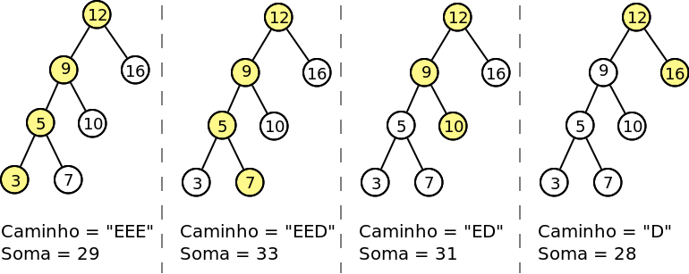

Pode assumir que o Mooshak terá acesso às classes descritas no enunciado do exercício 2 da aula prática.
public static String maxSum(BTree<Integer> t) da
classe ED213
Deve devolver uma string contendo apenas caracteres 'E' e 'D' indicando o caminho de maior soma (percurso desde a raíz até uma folha onde a soma dos valores guardados nos nós seja a maior possível). 'E' significa esquerda e 'D' significa direita, pelo que algo como "EED" indica o caminho Raiz->Esquerda->Esquerda->Direita.
Pode assumir que os nós contêm inteiros positivos e que existe sempre um único caminho de soma máxima com pelo menos dois nós para os casos que serão testados com o seu programa. A figura seguinte ilustra uma árvore e os 4 caminhos possíveis, sendo que o caminho de maior soma é o segundo, pelo que para esta árvore a função deveria devolver "EED".

O primeiro exemplo corresponde à árvore da figura do enunciado.
| Árvore t (em preorder com N a ser uma subárvore nula) |
maxSum(t) |
|---|---|
| 12 9 5 3 N N 7 N N 10 N N 16 N N | "EED" |
| 6 5 4 3 2 1 N N N N N N N | "EEEEE" |
| 3 1 N 2 N N 5 N 8 6 N 7 N N 10 N N | "DDED" |